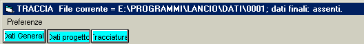
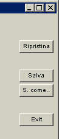
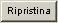
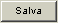
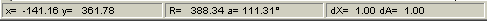
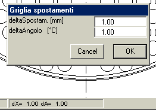

Il programma TRACCIA possiede una finestra principale suddivisa in alcune aree funzionali.

In essa si trova il menu Preferenze, e alcuni pulsanti di comando, la cui configurazione varia in funzione della fase del progetto in cui ci si trova.
In essa si trovano poi alcuni pulsanti di comando come quelli sopra rappresentati.

Anche la configurazione dei pulsanti di operazione varia in funzione della fase del progetto in cui ci si trova.
Il pulsante

permette di ripristinare i dati iniziali che erano presenti al momento dell'ultimo salvataggio su disco. Tuttavia è necessario tenere presente quanto esposto in merito al pulsante 'Salva'.Questo pulsante risulta utile quando si siano apportate delle modifiche non volute ai dati e si voglia ritornare alla situazione precedente.
Il pulsante

provoca il salvataggio su disco dei dati iniziali e, se presenti, dei dati finali. Tuttavia il salvataggio dei dati iniziali viene anche automaticamente eseguito quando si passa dai dati finali all'esecuzione della tracciatura e ai dati finali tramite la pressione del pulsante 'Tracciatura' situato nella zona del titolo. Vedi anche Ripristina.E' la grande area rettangolare centrale, nella quale, secondo i casi, si trovano gli elaborati grafici, ovvero le caselle di testo per l'imputazione dei dati

Questo elemento riporta informazioni di vario tipo a seconda del contesto. Nell'esempio sono riportate le coordinate cartesiane e polari della posizione del mouse nell'area grafica o del centro di un foro della piastra puntato dal mouse. dX e dA sono gli incrementi lineari (in mm) e angolari (in gradi) applicabili ai movimenti imposti dall'utente agli elementi dell'area grafica.
Gli incrementi preimpostati possono essere modificati cliccando sulla barra di stato: apparirà allora la finestra seguente.
